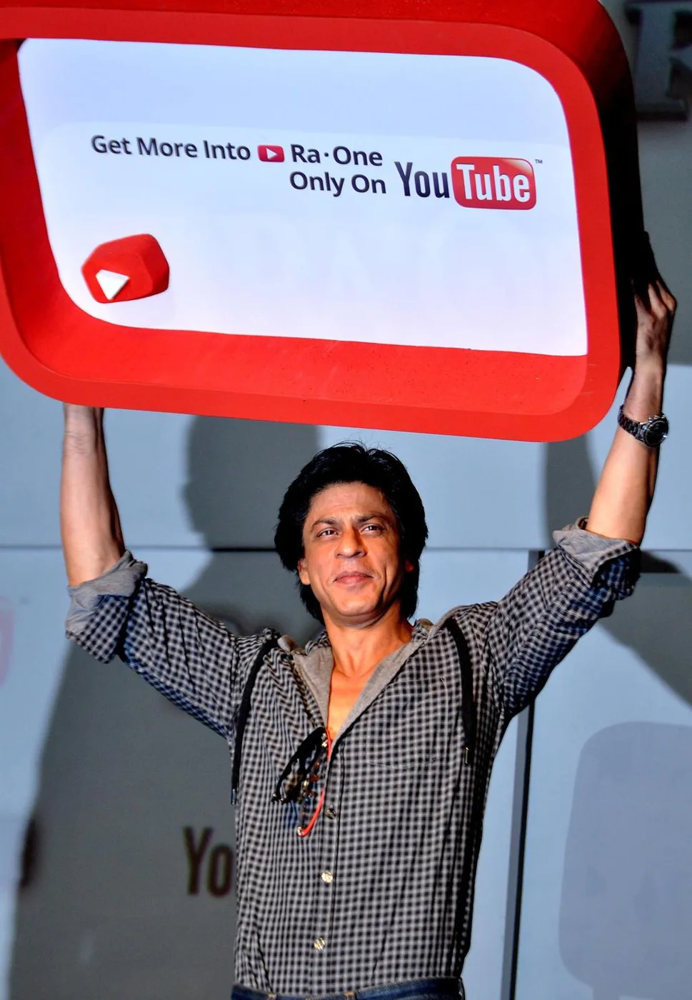
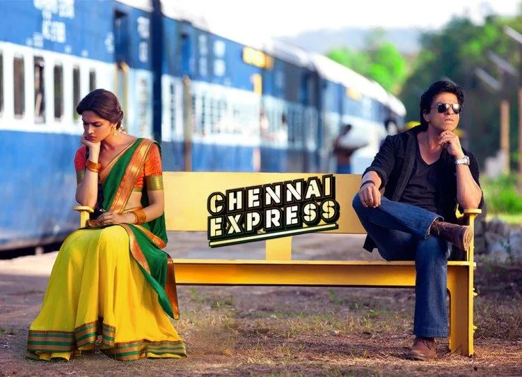

The Final Thesis · section 43 of 92
PART I — THE DIGITAL BLUEPRINT
Chapter 1. Before the Industry Understood the Internet: Ra.One, 2011

![[Update: New Footage!] Shah Rukh Khan's RA.ONE Website Opens With Tons Of Goodies!](img/image254.webp)

5
In retrospect, Ra.One was more than a science-fiction film. It was a commercial experiment in the architecture of an entertainment property.
The 2012 FICCI-KPMG Indian media and entertainment report documented the campaign as a series of firsts for the Indian film industry. The report put the film's production budget at approximately ₹100 crore and its marketing and promotion expenditure at a further ₹55 crore. It noted that brand associations subsidised a substantial portion of the marketing investment.

The metamorphosis begins
The numbers matter, but the structure matters more.
1.1 The campaign as an interconnected system
The campaign began approximately nine months before release. Its components included:
| Strategic component | Documented execution |
|---|---|
| Digital presence | A dedicated film website, digital assets, online videos and a custom YouTube film channel |
| Character development | A 100-page G.One style guide, supporting consistent creative and merchandise development |
| Merchandising | An in-house online store with 64 original merchandise items |
| Gaming | A social-media action game adapted across Facebook, smartphones, feature phones, tablets and DTH |
| Publishing | A weekly online graphic novel and a print graphic novel distributed to 33 million homes through a newspaper partnership |
| Brand partnerships | Associations with brands including Volkswagen, Google, Nokia, Coca-Cola, Western Union, HCL and others |
| Fan engagement | Direct interaction through digital channels, social-media activity and character-based content |
Source: FICCI-KPMG's 2012 media and entertainment industry report, drawing on industry and Red Chillies Entertainment inputs.
The metamorphosis begins
One of the most significant details is the character style guide.
The creation of a consistent visual and creative system for G.One meant that the character could exist across products and communication formats without being reinvented from scratch each time. This is a foundational principle of intellectual-property management: a character becomes commercially scalable when its identity can travel.
The campaign also reportedly generated ₹15 crore from gaming and merchandising, while more than 25 brand associations contributed a reported ₹52 crore. These are historical figures reported in the industry study, not independently audited numbers presented here.
The metamorphosis begins
The strategic lesson is that a film's commercial life need not begin and end with its theatrical release.
A character can become a game. A game can become an engagement channel. A merchandise product can become a physical reminder of the story. A brand partnership can extend distribution into another company's customer network.
The film becomes the centre of a much larger commercial system.
1.2 The radical idea hidden inside the campaign
The most important innovation of Ra.One was not simply that it used social media early.
It was the attempt to make the audience interact with the intellectual property outside the cinema.
The fan was no longer only a ticket buyer. The fan could follow a character, play a game, collect merchandise, encounter the film through another brand, share content, and participate in a digital world that existed before the film opened.
That distinction is fundamental.
Traditional film promotion asks:
How do we persuade the audience to watch this film?
An integrated entertainment ecosystem asks:
How do we give the audience reasons to remain inside this world before, during, and after the film?
The second question has a much longer commercial horizon.
And it is precisely this distinction that makes the Ra.One experiment relevant to the present era of gaming, creator economies, AI-generated content, and interactive entertainment.
Chapter 2. Chennai Express, 2013: When the Audience Became Data, Distribution and Participation



If Ra.One explored the possibility of a film becoming an entertainment property, Chennai Express demonstrated how digital marketing could become an integrated operating system for a film launch.
data management
The case study described a campaign built around a combination of websites, mobile applications and games, YouTube, Facebook, Twitter, puzzles, fan clubs, social-media integration, and data analysis.
Its central observation was that these tools worked together, rather than as disconnected channels.
2.1 The reported campaign statistics
Historical campaign figures
1 billion+
Cumulative tweet impressions
Campaign-wide reported total
750,000+
Tweets across campaign hashtags
Reported over 90 days
3.8M → 4.9M
Reported Twitter following
Shah Rukh Khan's account during the campaign planning and execution period
90 days
Campaign measurement window
As reported by Persistent Systems
Sources: Persistent Systems' campaign announcement as reported by PTI/Times of India, December 26, 2013, and the Chennai Express digital marketing case study. These are reported campaign metrics, not independently audited unique-user or conversion figures.
Times of India
+1
A billion impressions is not a billion people. Impressions measure the number of times content was served or potentially viewed; they do not establish unique reach, attention, ticket conversion, or incremental revenue.
That distinction does not diminish the achievement. It establishes the correct analytical framework.
The campaign demonstrated that a film's digital footprint could be measured at scale, that audience behaviour could be analysed during the campaign, and that insights could be used to inform subsequent communication.
2.2 From social media to actionable intelligence
The case study describes the use of analytics and calibrated metrics to understand audience preferences and engagement. It refers to a recommendation system designed to convert social-media data into actionable insights.
data management
This is where the campaign becomes particularly relevant to modern marketing.
The social audience was not treated simply as a crowd to be reached. It was a constantly changing source of feedback.
The underlying cycle was:
CONTENT AND CREATIVE
Trailers, puzzles, games, posts, fan activities
AUDIENCE PARTICIPATION
Shares, comments, tweets, fan-club activity, responses
DATA AND ANALYSIS
Engagement signals, audience preferences, campaign response
ACTIONABLE CAMPAIGN DECISIONS
Refined creative, distribution, targeting and further participation
Conceptual representation of the campaign's documented digital and analytics approach, not a reproduction of a proprietary technical architecture.
This is the difference between using social media and designing a social system.
The former distributes a message. The latter can learn from the audience, adapt the message, and invite the audience to help distribute it.
2.3 The fan club as an early creator network
Fan clubs were not a new invention. What changed was their potential role in an integrated digital campaign.
A fan club could become a distribution node. A local community could adapt a campaign idea to its own language and culture. A puzzle or contest could encourage participation. A fan-created response could generate further conversation.
This is the precursor to what is now described as community-led growth, creator marketing, user-generated content, and participatory entertainment.
The key idea is not that every fan should become an advertiser.
It is that the most committed fans already have something traditional advertising cannot manufacture on demand: a personal reason to care.
The marketing challenge is to provide the tools, creative freedom, and recognition that allow that commitment to become participation.
2.4 The question the industry should have asked
By 2013, the ingredients were visible:
An established celebrity with a large digital audience.
An intellectual property that could be extended into games, > products, and stories.
Brand partners willing to contribute distribution and marketing > resources.
Fan communities with their own networks and cultural influence.
Analytics capable of measuring activity and informing decisions.
What would happen if these ingredients were developed into a permanent fan-powered platform, rather than reassembled for each film?
That is the question this study carries forward.